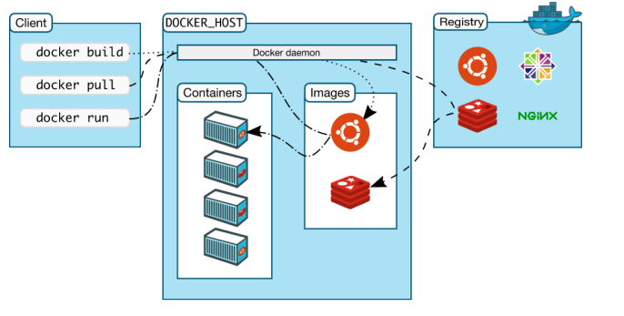

🔹Docker
Docker es una herramienta que utiliza la tecnología de contenedores para empaquetar aplicaciones y sus dependencias en unidades portátiles y ligeras. Esto garantiza que una aplicación se ejecute de la misma manera en cualquier entorno, ya sea en una computadora local, un servidor de desarrollo, o en la nube.
Toda la infomación la podéis encontrar en el sitio oficial de Docker https://docs.docker.com/manuals/
En esta imagen podemos ver como funciona la arquitectura básica de Docker.

🔹Conceptos clave
- Imágenes:
Una imagen es una plantilla de solo lectura que se utiliza para crear contenedores. A partir de una imagen pueden crearse múltiples contenedores. Docker permite crear nuevas imágenes basándose en imágenes anteriores. Al crear una nueva imagen, simplemente estamos añadiendo una capa a la imagen anterior, la que actúa como base.
- Contenedores:
Son instancias de una imagen. Pueden ser arrancados, parados y ejecutados. Cada contenedor Docker posee un identificador único. Son entornos aislados que contienen todo lo necesario para ejecutar una aplicación: código, bibliotecas, dependencias, y configuraciones. A diferencia de las máquinas virtuales, los contenedores comparten el mismo núcleo del sistema operativo, lo que los hace más ligeros y eficientes.
- Docker Engine:
Es el motor que ejecuta y gestiona los contenedores. Permite construir imágenes, iniciar contenedores y comunicarse con el hardware del sistema.
- Docker Hub:
Es un repositorio en línea donde se pueden almacenar y compartir imágenes de Docker. Ofrece una amplia variedad de imágenes predefinidas listas para usar. Por defecto, Docker utiliza esta plataforma de registro.
Comandos habituales
En el uso diario de Docker, existen una gran cantidad de comandos que permiten trabajar con imágenes, contenedores, redes y volúmenes. Sin embargo, para iniciarse y poder manejarlo en clase, es suficiente con conocer un conjunto reducido de órdenes básicas.
La siguiente tabla recoge los 10 comandos más utilizados en un entorno educativo. Con ellos podrás:
| Comando | Descripción |
|---|---|
docker --version |
Muestra la versión instalada de Docker. |
docker pull <imagen> |
Descarga una imagen desde Docker Hub. |
docker images |
Lista las imágenes descargadas en el sistema. |
docker ps -a |
Lista todos los contenedores (activos y detenidos). |
docker run -it <imagen> |
Crea y arranca un contenedor en modo interactivo con terminal. |
docker start <contenedor> |
Inicia un contenedor detenido. |
docker stop <contenedor> |
Detiene un contenedor en ejecución. |
docker rm <contenedor> |
Elimina un contenedor detenido. |
docker build -t <nombre> . |
Construye una imagen a partir de un Dockerfile. |
docker-compose up |
Levanta servicios definidos en docker-compose.yml. |
docker save -o <fichero> <imagen> |
Copia de seguridad de una imagen en un fichero. |
docker load -i <fichero> |
Importar un fichero para crear una imagen. |
Para saber más podéis consultar su página Web: https://www.docker.com/
🔹Instalación en Ubuntu
https://docs.docker.com/desktop/setup/install/linux/ubuntu/
https://docs.docker.com/engine/install/ubuntu/
🔹Requisitos previos
- Asegúrate de que tu sistema está actualizado:
sudo apt update && sudo apt upgrade -y
- Desinstala versiones antiguas de Docker si están instaladas:
sudo apt remove docker docker-engine docker.io containerd runc
🔹Pasos para instalar Docker
1) Instalar paquetes necesarios:
sudo apt install apt-transport-https ca-certificates curl software-properties-common
2) Agregar la clave GPG de Docker:
curl -fsSL https://download.docker.com/linux/ubuntu/gpg | sudo gpg --dearmor -o /usr/share/keyrings/docker-archive-keyring.gpg
3) Agregar el repositorio de Docker:
echo "deb [arch=$(dpkg --print-architecture) signed-by=/usr/share/keyrings/docker-archive-keyring.gpg] https://download.docker.com/linux/ubuntu $(lsb_release -cs) stable" | sudo tee /etc/apt/sources.list.d/docker.list > /dev/null
4) Actualizar el índice de paquetes e instalar Docker:
sudo apt update
sudo apt install docker-ce docker-ce-cli containerd.io
5) Verificar la instalación:
docker --version
6) Habilitar Docker para que inicie con el sistema:
sudo systemctl enable docker
7) Opcional: Permitir ejecutar Docker sin sudo:
sudo usermod -aG docker $USER
# Sal y vuelve a iniciar sesión para aplicar los cambios
🔹Probar Docker
Ejecuta el siguiente comando para probar si Docker está funcionando correctamente:
docker run hello-world
🔹Instalación en Windows
https://docs.docker.com/desktop/setup/install/windows-install/
https://docs.docker.com/docker-for-windows/install/
🔹Requisitos previos
- Windows 10 o superior con soporte para WSL 2.
- Habilitar virtualización en el BIOS.
🔹Pasos para instalar Docker
1) Descargar Docker Desktop:
- Ve al sitio oficial de Docker y descarga Docker Desktop: https://www.docker.com/products/docker-desktop
2) Ejecutar el instalador:
- Sigue las instrucciones del asistente de instalación.
3) Habilitar WSL 2:
- Asegúrate de que WSL 2 está habilitado en tu sistema:
dism.exe /online /enable-feature /featurename:Microsoft-Windows-Subsystem-Linux /all /norestart
dism.exe /online /enable-feature /featurename:VirtualMachinePlatform /all /norestart
wsl --set-default-version 2
4) Configurar Docker Desktop:
- Abre Docker Desktop y sigue las instrucciones para configurar WSL 2.
5) Verificar la instalación:
- Abre una terminal y ejecuta:
docker --version
6) Probar Docker:
- Ejecuta el comando:
docker run hello-world
🔹Docker Compose
Docker Compose es una herramienta de Docker que permite definir y gestionar aplicaciones multicontenedor de forma sencilla.
-
Docker Desktop (Windows/Mac) → ya lo trae integrado.
-
Linux con Docker Engine → hay que instalarlo aparte.
Con Docker Compose puedes describir en un archivo de configuración (normalmente docker-compose.yml) todos los servicios que forman tu aplicación.
Comandos básicos de Docker Compose
| Comando | Descripción |
|---|---|
docker-compose up |
Levanta los servicios definidos en el archivo docker-compose.yml. |
docker-compose down |
Detiene y elimina contenedores, redes y volúmenes creados. |
docker-compose ps |
Muestra el estado de los servicios gestionados por Compose. |
docker-compose logs |
Muestra los registros (logs) de los servicios en ejecución. |
👉 Ejemplo de archivo docker-compose.yml mínimo:
version: "3.9"
services:
postgres:
image: postgres:16
container_name: mi_postgres
environment:
POSTGRES_USER: usuario
POSTGRES_PASSWORD: clave
POSTGRES_DB: mi_bd
ports:
- "5432:5432"
volumes:
- ./data:/var/lib/postgresql/data
Con este archivo, solo necesitarías ejecutar:
docker-compose up
y ya tendrías corriendo un contenedor con PostgreSQL configurado.
🔹Copia y carga de Imágenes
- Construcción de una imagen:
Los desarrolladores crean un archivo llamado Dockerfile, donde se especifican los pasos para construir la imagen de una aplicación. A partir del Dockerfile, Docker genera una imagen.
- Distribución de imágenes:
Las imágenes pueden ser subidas a Docker Hub u otros registros privados para compartirlas y utilizarlas en diferentes sistemas.
Una vez tengamos una imagen local en nuestro sistema, podemos hacer una copia de la misma, ya sea como copia de seguridad o como forma de transportarla a otros sistemas mediante el comando docker save.
- docker save -o copiaSeguridad.tar imagen
https://docs.docker.com/engine/reference/commandline/save/
Si queremos importar el fichero para crear una imagen en nuestra máquina, podemos usar “docker load”.
- docker load -i copiaSeguridad.tar